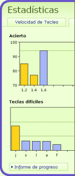

Para ver todos los resultados, pulse "Estadísticas" en el menú a la derecha.
Puede ver gráficas sobre su progreso de acierto y velocidad. Para una información más detallada sobre su progreso, pulse "Informe de Progreso" y verá un informe completo.
Además, puede imprimir el informe de progreso.